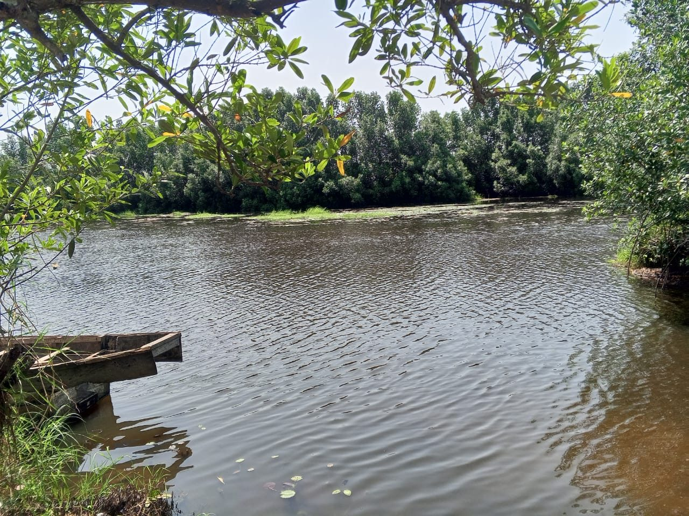

Les zones humides du Bénin, mieux connaître pour mieux préserver.
Une plateforme scientifique et cartographique dédiée à la recherche, à la connaissance et à la valorisation des écosystèmes humides du Bénin.
- 4 Sites Ramsar
- 12 Départements à explorer
- En cours Documentation scientifique
Carte interactive du Bénin Explorer
Coordonnées centrales des sites (fiches Ramsar).
Dernières publications Voir tout
 Hooded Vultures : commerce illégal et usages liés aux croyances au BéninCo-auteur · 2025 · Bird Conservation International
Hooded Vultures : commerce illégal et usages liés aux croyances au BéninCo-auteur · 2025 · Bird Conservation International
Accaparement des terres agricoles à Kpomassè (Sud-Bénin)Co-auteur · 2025 · GEOVISION Dégradation des zones humides du site Ramsar 1018Communication · Lomé, 2-4 décembre 2026
Dégradation des zones humides du site Ramsar 1018Communication · Lomé, 2-4 décembre 2026
À propos de l'OZHB

L'OZHB est une initiative scientifique et cartographique qui vise à faire connaître et préserver les écosystèmes humides du Bénin, par la géomatique, la télédétection et la recherche environnementale.
HONFO Elfried Elisée
Porteur du projet. Lire la biographie